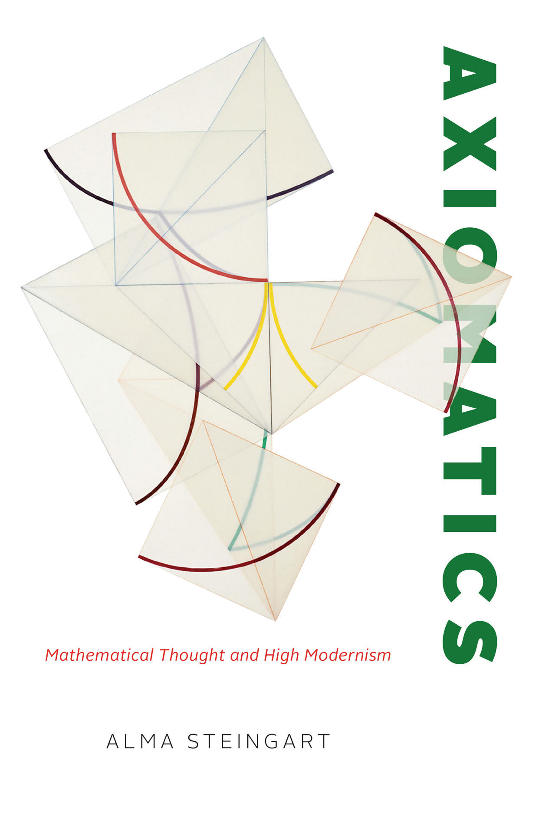
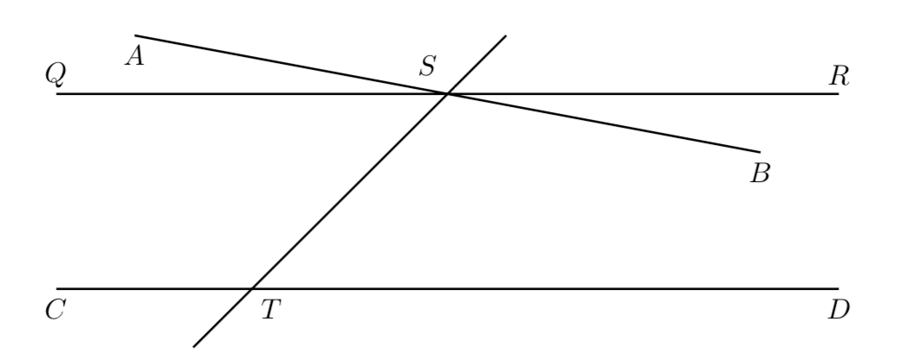
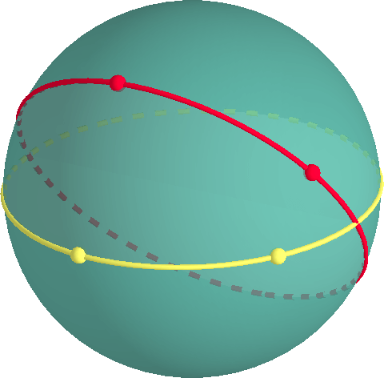
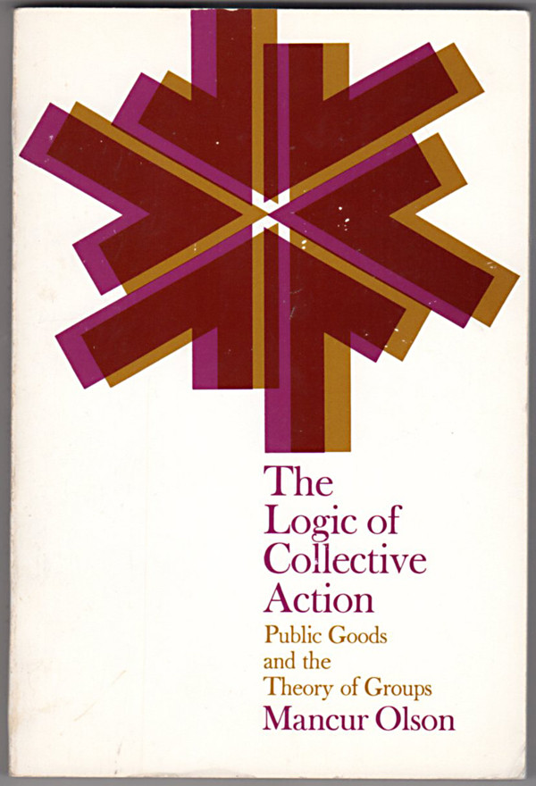
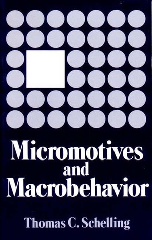

Week 1: Introduction to the Course
DSAN 5450: Data Ethics and Policy
Spring 2024, Georgetown University
Jeff Jacobs
Ethics as an Axiomatic System
\[ \newcommand{\nimplies}{\;\not\!\!\!\!\implies} \]
Axiomatics
- Popular understanding of math: Deals with Facts, statements are true or false
- Ex: \(1 + 1 = 2\) is “true”
- Reality: No statements in math are absolutely true! Only conditional statements are possible to prove!
- We cannot prove atomic statements \(q\), only implicational statements: \(p \implies q\) for some axiom(s) \(p\).
- \(1 + 1 = 2\) is indeterminate without definitions of \(1\), \(+\), \(=\), and \(2\)!
- (Easy counterexample for math/CS majors: \(1 + 1 = 0\) in \(\mathbb{Z}_2\))

Example: \(1 + 1 = 2\)
- How it’s taught: this is a rule, and if you don’t follow it you will be banished to eternal hellfire
- How it’s proved: \(ZFC \implies [1 + 1 = 2]\), where \(ZFC\) stands for the Zermelo-Fraenkel Axioms with the Axiom of Choice!
Proving \(1 + 1 = 2\)
(A non-formal proof that still captures the gist:)
- Axiom 1: There is a type of thing that can hold other things, which we’ll call a set. We’ll represent it like: \(\{ \langle \text{\textit{stuff in the set}} \rangle \}\).
- Axiom 2: Start with the set with nothing in it, \(\{\}\), and call it “\(0\)”.
- Axiom 3: If we put this set \(0\) inside of an empty set, we get a new set \(\{0\} = \{\{\}\}\), which we’ll call “\(1\)”.
- Axiom 4: If we put this set \(1\) inside of another set, we get another new set \(\{1\} = \{\{\{\}\}\}\), which we’ll call “\(2\)”.
- Axiom 5: This operation (creating a “next number” by placing a given number inside an empty set) we’ll call succession: \(S(x) = \{x\}\)
- Axiom 6: We’ll define addition, \(a + b\), as applying this succession operation \(S\) to \(a\), \(b\) times. Thus \(a + b = \underbrace{S(S(\cdots (S(}_{b\text{ times}}a))\cdots ))\)
- Result: (Axioms 1-6) \(\implies 1 + 1 = S(1) = S(\{\{\}\}) = \{\{\{\}\}\} = 2. \; \blacksquare\)
How Is This Relevant to Ethics?
(Thank you for bearing with me on that 😅)
- Just as mathematicians slowly came to the realization that
\[ \textbf{mathematical results} \neq \textbf{(non-implicational) truths} \]
- I hope to help you see how
\[ \textbf{ethical conclusions} \neq \textbf{(non-implicational) truths} \]
- When someone says \(1 + 1 = 2\), you are allowed to question them, and ask, “On what basis? Please explain…”.
- Here the only valid answer is a collection of axioms which entail \(1 + 1 = 2\)
- When someone says Israel has the right to defend itself, you are allowed to question them, and ask, “On what basis? Please explain…”
- Here the only valid answer is an ethical framework which entails that Israel has the right to defend itself.
Axiomatic Systems: Statements Can Be True And False
- Let \(T\) be the sum of the interior angles of a triangle. We’re taught \(T = 180^\circ\) is a “rule”
- Euclid’s Fifth Postulate \(P_5\): Given a line and a point not on it, exactly one line parallel to the given line can be drawn through the point.


Ethical Systems: Promise-Keeping
- Scenario: You just baked a pie, and you promised your friend you’d give them the pie. You’re walking over to the friend’s house to give them the pie.
- Suddenly, you turn the corner to encounter a hostage situation: the hostage-taker is going to kill their hostage unless someone gives them a pie in the next 30 seconds
- Do you give the hostage-taker the pie?
- To be ethical is to weigh consequences of your actions
- The positive consequences of giving the pie to the hostage-taker (saving a life) outweigh the negative consequences (breaking your promise to your friend)
- (Ex: Utilitarianism, associated with British philosopher Jeremy Bentham)
- To be ethical is to live by rules which you would want everyone to follow.
- As a rule (a “categorical imperative”), you must not break promises. (Breaking this rule \(\implies\) others can also “pick and choose” when to honor promises to you)
- (Ex: Kantian Ethics, associated with German philosopher Immanuel Kant)
Making and Evaluating Ethical Arguments
Descriptive vs. Normative
| Descriptive Statement: “Bin Laden attacked us because we had been bombing Iraq for 10 years” | Normative Statement: “Bin Laden attacked us because we had been bombing Iraq for 10 years, and that is a good justification” |
| Descriptively True (empirically verifiable) | Normatively True (entailed by axioms + descriptive facts) in some ethical systems, Normatively False (not entailed by axioms + descriptive facts) in others |
What Happens When We Confuse The Two?
- Makes it impossible to “cross the boundary” between your own and others’ beliefs
- Collective welfare: Bad on its own terms (see: wars, racism, etc.)
- Self-interest: Prevents us from convincing other people of our arguments
Collective vs. Self-Interest
- Good for collection of people \(\; \nimplies\) good for each individual person! (😰)
- \(p\) = Unions improve everyone’s workplace conditions, whether or not they pay dues
- \(q\) = Union dues are voluntary
- \(p \wedge q \implies\) I can obtain benefits of unions without paying
- \(\implies\) Individually rational to not pay dues
- (Think also about how this applies to climate change policy)

Modeling Individual vs. Societal Outcomes
- Individual Perspective: Individual \(i\) chooses whether or not to pay union dues
\(\implies\) Social Outcome: No Union

Takeaway for Policy Whitepapers
- You cannot (just) say, “doing \(x\) will be better for society”
- You must also justify benefits to individuals, or at minimum, the individual organization and its stakeholders!
- (Is this a normative or descriptive claim?)
Ethical Issues in Data Science
- Self-Driving Cars
- Facial Recognition Algorithms
- Large Language Models
- Military and Police Applications of AI
Facial Recognition Algorithms

Military and Police Applications of AI

References
bin Laden, Osama. 2005. Messages to the World: The Statements of Osama Bin Laden. Verso Books.
Facia.ai. 2023. “Facial Recognition Helps Vendors in Healthcare.” Facia.ai. https://facia.ai/blog/facial-recognition-healthcare/.
Geertz, Clifford. 1973. The Interpretation Of Cultures. Basic Books.
McNeil, Sam. 2022. “Israel Deploys Remote-Controlled Robotic Guns in West Bank.” AP News, November. https://apnews.com/article/technology-business-israel-robotics-west-bank-cfc889a120cbf59356f5044eb43d5b88.
Olson, Mancur. 1965. The Logic of Collective Action. Harvard University Press.
Ouz. 2023. “Google Pixel 8 Face Unlock Vulnerability Discovered, Allowing Others to Unlock Devices.” Gizmochina. https://www.gizmochina.com/2023/10/16/google-pixel-8-face-unlock/.
Schelling, Thomas C. 1978. Micromotives and Macrobehavior. Norton.
Senor, Dan, and Saul Singer. 2011. Start-up Nation: The Story of Israel’s Economic Miracle. Grand Central Publishing.
Steingart, Alma. 2023. Axiomatics: Mathematical Thought and High Modernism. University of Chicago Press.
Wang, Yilun, and Michal Kosinski. 2018. “Deep Neural Networks Are More Accurate Than Humans at Detecting Sexual Orientation from Facial Images.” Journal of Personality and Social Psychology 114 (2): 246–57. https://doi.org/10.1037/pspa0000098.
Wellcome Collection. 1890. “Composite Photographs: "The Jewish Type".” https://wellcomecollection.org/works/ngq29vyw.
Whitehead, Alfred North, and Bertrand Russell. 1910. Principia Mathematica. Cambridge University Press.
DSAN 5450 Week 1: Introduction